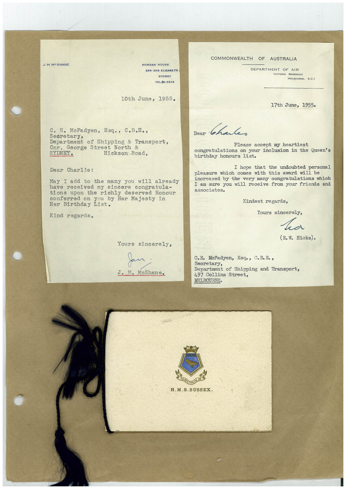

Book 1 · scan 092


Description
Transcription
Context
Review notes
Compare the machine draft with the scan. Handwriting and names need human review.
Artifacts
Edit the artifacts field in this note’s frontmatter to change these records. This summary is generated.
B01-S092-A01 — Letter & Invitation — Book 1, scan 092
Types: Typed document, Letter, Invitation
Scope: Whole scanned page; individual items can be split out during review.
Caption: Not mapped yet.
Caption source: Not recorded yet.
Caption status: unmapped
Machine transcription
UM M-SHANE MORGAN HOUSE 255•259 ELIZABETH SYDNEY TELEM 6904 COMMONWEALTH OF AUSTRALIA DEPARTMENT OF AIR VICTORIA BARRACKS MELBOURNE. 10th June, 1955. 17th June, 1955. C. H. McFadyen, Esq., C.B.E., Secretary, Department of Shipping & Transport, Cnr. George Street North & SYDNEY. Hickson Road, Dear Charlie: May I add to the many you will already have received my sincere congratula- tions upon the richly deserved Honour conferred on you by Her Majesty in Her Birthday List. Kind regards. Dear Charles Please accept my heartiest congratulations on your inclusion in the Queen's birthday honours list. I hope that the undoubted personal pleasure which comes with this award will be increased by the very many congratulations which I am sure you will receive from your friends and associates. Kindest regards, Yours sincerely, ka (E.W. Hicks). Yours sincerely, Jan J. M. MoShane. C.E. MoFadyen, Esq., C. B. Ee, Secretary, Department of Shipping and Transport, 497 Collins Street, MELBOURNE. FORTITER H.M.S.SUSSEX.